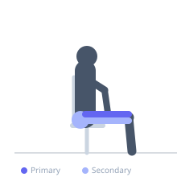
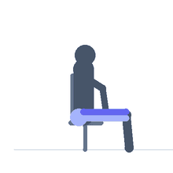

Exercise guide / Leg Press
Leg Press
The leg press is a machine-based lower body pushing exercise in which the lifter pushes a weighted platform away from the body with both feet. Because the spine is supported, it allows very heavy loading of the quadriceps with minimal lower back involvement, making it an effective accessory or primary leg exercise.
Primary muscles
rectus femoris
vastus lateralis
vastus medialis
vastus intermedius
Secondary muscles
gluteus maximus
biceps femoris long head
Equipment
Leg Press Machine


Starting position
- Sit in the leg press machine with the back and head against the pad. Place feet shoulder-width apart on the platform, toes pointing slightly outward. Release the safety handles.
Setup
- Adjust the seat so the knees are at approximately 90 degrees with feet on the platform. Do not place the feet so low that heels lift at the bottom.
Steps
- Release the safety catches and control the platform toward your body by bending the knees.
- Lower until knees are at approximately 90 degrees or slightly more.
- Press the platform away by extending the knees and hips back to the starting position.
Coaching cues
- Push the platform away through your heels and mid-foot, not just the toes
- Keep knees tracking over toes throughout the movement
Breathing
- Inhale as the platform descends. Exhale on the press.
Range of motion
- Approximately 90–100 degrees of knee flexion at the bottom. Full extension (without hyperextension) at the top.
Tempo
- 3-1-1-0
Common mistakes
- Placing feet too low on the platform, causing heels to lift and rounding the lower back
- Locking the knees out aggressively at the top
- Allowing the knees to collapse inward
Safety
- Never remove the safety catches while weight is on the sled
- Do not go so deep that the lower back rounds off the pad
Training
- strength: 4–8 reps
- hypertrophy: 8–15 reps
- endurance: 15–25 reps
- strength: 3–5 sets
- hypertrophy: 3–4 sets
- endurance: 2–3 sets
- Rest: {'strength': 180, 'hypertrophy': 90, 'endurance': 60}